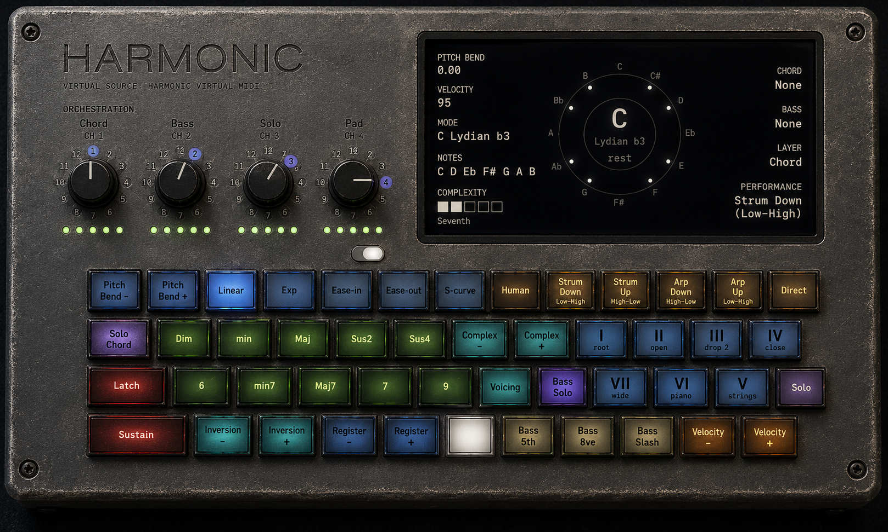
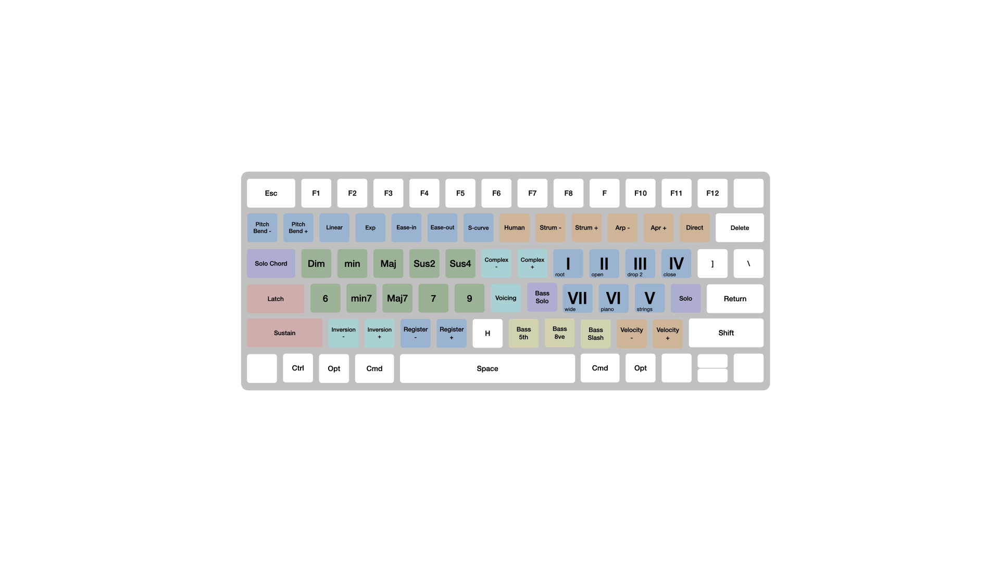

Keyboard first
Performance should require almost no mouse interaction.
Private alpha for macOS musicians
Harmonic is a keyboard-first harmonic instrument for macOS. It lets you play chords, bass and melody through the virtual instruments you already own, without stopping to program every part.
Keep your hands on the keyboard, your attention on the music and your ideas moving.

The problem
Virtual instruments can sound extraordinary, but composing with them often means moving between plugin windows, piano rolls, chord tools, routing controls and mouse-driven editing.
A MIDI controller may improve physical access, but it does not remove the need to learn and coordinate the musical and technical systems beneath it.
The core change
Harmonic moves more of the composition process into real-time performance. Instead of constructing each part independently, the musician can shape a coordinated harmonic performance from the keyboard and hear several instruments respond together.
Editing remains available later. It is no longer required before the idea can be heard.
How it works

Existing instruments
Harmonic does not include another collection of presets or replace the instruments already in the studio. It is designed to control the tools musicians already use: synthesisers, samplers, orchestral libraries, bass instruments and other MIDI destinations.
Design principles
Performance should require almost no mouse interaction.
A musical idea should become audible without a setup ritual.
The same input and state should produce the same musical result.
The system should support performance rather than merely output correct notes.
The interface should always communicate what Harmonic is doing.
New capability should reduce friction or deepen expression.
Alpha status

Harmonic's core performance architecture is now established. Testing is expanding to more musicians, instruments and workflows before broader release.
Early testers will help evaluate learnability, musical immediacy, interaction clarity, MIDI routing, compatibility, documentation and workflow friction.
Local first
Harmonic is a native macOS application designed to operate locally. The intended product direction is direct control of local MIDI instruments without a mandatory online account, cloud composition service or requirement to upload musical data.